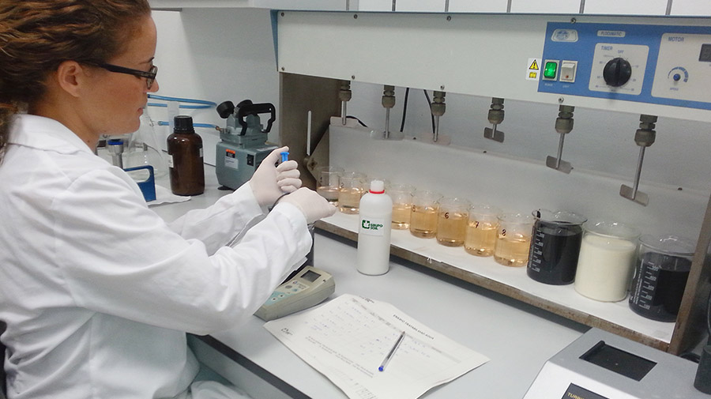

Consultorías
BAJA SAFETY pone a disposición del mercado asesoría especializada en los temas de Ambiental, Seguridad e Higiene, Lean Manufacturing, Ergonomía y Automatización y Control.
Área de Ambiental y Seguridad
En el área de Ambiental y Seguridad contamos con servicio de capacitaciones certificadas, estudios en laboratorio acreditado y nuestra herramienta favorita el Job Safety Analisys que nos ayuda a entender los riesgos a los que los empleados se exponen y así sugerir el mejor control que beneficie a nuestros clientes.
Manifiestos de Impacto Ambiental
• Desarrollos Turísticos Federales
• Vías de comunicación
• Proyectos de obra hidráulica y acuacultura
• Actividades industriales en la frontera.
Ingeniería Ambiental
• Diseño e instalación de sistemas de extracción.
•
Control de contaminantes.
Ventilación industrial.
•
Estudios de tratamientos de aguas residuales de proceso.
•
Diseño e Instalación de plantas de tratamiento de Aguas Residuales.
•
Desarrollo de certificación como Industria Limpia.
•
Auditorias de cumplimiento normativo en materia de salud ocupacional y Ambiental.
Ergonomía Cognitiva y Organizacional
• Factores de riesgo psicosocial
• Identificación, prevención y seguimiento (Artículo 43 del Reglamento Federal de Seguridad y Salud en el Trabajo).
Residuos Peligrosos
• Auditoría para verificar cumplimiento cabal de la normatividad vigente.
Solicitud de autorización de almacén de residuos peligrosos.
•
Establecer programa de manejo interno de residuos peligrosos.
•
Elaboración del reporte semestral ante la SEMARNAT (COA= Cedula de Operación Anual).
•
Registro ante SPABC como generador de Residuos de Manejo Especial (RME).
•
Elaboración de reporte anual ante SPABC como generador de Residuos de Manejo Especial (RME) y como prestador de servicios de RME.
•
Elaboración de Plan de manejo de Residuos de Manejo Especial ante Secretaria de Protección al Ambiente de Baja California (SPABC).
Seguridad e Higiene Industrial
• Reconocimiento y Evaluación de contaminantes de áreas laborales, signatario autorizado.
•
Estudios de ruido (NSCE) y análisis de frecuencia (NPA)
•
Estudios de Índice de temperatura
•
Estudios de iluminación en áreas laborales
•
Desarrollo para la Certificación de grúas viajeras ante OSHA
•
Instalación de red de tierras físicas (deltas de tierras) de acuerdo a la NOM-022-STPS-2015
•
Medir y registrar los valores de resistencia de la red de puesta a tierra, de conformidad con el método establecido de la STPS, y de la continuidad en los puntos de conexión a tierra en el equipo que pueda generar o almacenar electricidad estática, al menos cada doce meses (NOM-022-STPS-2015).
Emisiones Atmosféricas
• Estudios cualitativos y cuantitativos de contaminantes.
•
Inventarios de emisiones.
•
Determinación de volúmenes de descarga
•
Monitoreo de gases de combustión.
•
Calidad de aire ambiente.
•
Trámite de Registros y Licencias de emisiones.
Estudios de Riesgo Ambiental y PPA
•
Integración y modelaje de la información.

Aguas Residuales
•
Auditoria de Puntos de Descarga.
•
Protocolos de Muestreo.
•
Muestreo de aguas residuales.
•
Sistemas de manejo y tratamiento de aguas residuales.
•
Diseño de plantas de tratamiento.
Vigilancia Médica
• Estudios Audiometrías.
Nota: Se cuenta con unidad acústica para realizar el estudio en plantas sin la necesidad de que el personal de la empresa pierda tiempo laboral.
•
Estudios Espirómetros.
•
Estudios de Sangre para determinar exposición laboral a contaminantes.
•
Exámenes Médicos Específicos.
Prueba de Materiales Peligrosos
•
Prueba de Sellado de Mascaras
es un estudio profesional con un equipo calibrado, que determina las medidas correctas y el tipo de máscaras HazMat ideal para los trabajadores.
Se recomienda llevar a cabo esta prueba en un plan anual, cubrirá los requerimientos para los nuevos ingresos.
• Prueba de Sellado de Trajes
Encapsulados, se debe realizar cada seis meses o si visualmente se ha detectado alguna anomalía. Esta prueba con equipo calibrado asegura que no existan perforaciones y que sea seguro usar el traje.